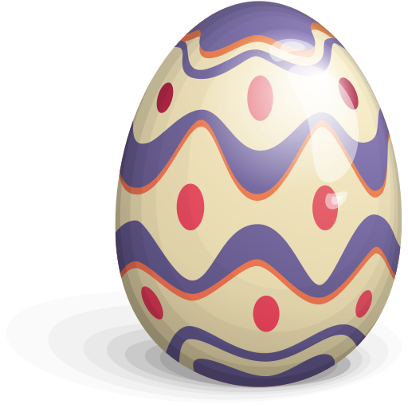

激情岁月，大气向前。臭蛋，程序猿一只，生长于曾经烟波浩淼的大洞庭湖畔，随后光阴飞逝，命途变幻，前往武汉，在郁郁葱葱的大大华科度过四载，彼时正值青春，心中感慨，万千。随后北上，落在计算所，正至今！路在脚下，用心拓宽！
在华科，有幸跟于涂博，全力参与GeoDFS开发，历时八九个月份，编码虽累，却乐在其中，也算第一次亲密接触C++，第一次参与货真价实的项目，从此，编程启蒙,不忘恩师。
目前在计算所学习虚拟化和云计算相关的知识，参与OpenStack的二次开发
以前在cnblogs上开了个博客，有一些关于xen cloud platform和android zxing的文章。